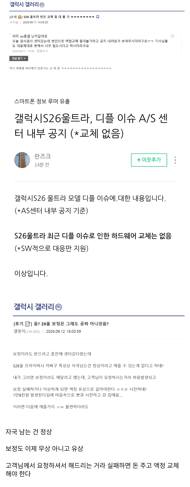
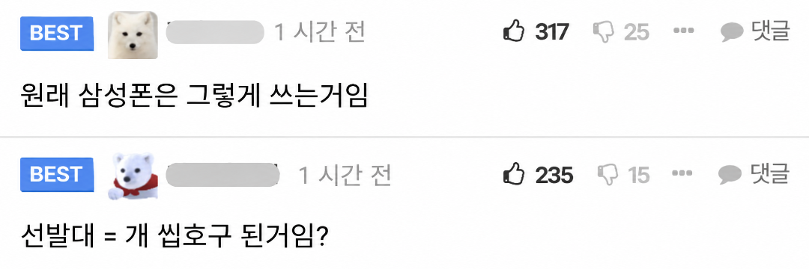

이번 세일때도 안샀는데 개잘했너 ㅋㅋㅋㅋㅋㅋ
배를 째셨어
왜 표독해졌냐ㅋㅋㅋ
플러스는 해당사항없냐
휴다행
이젠 정말 샤오미 포코 화웨이 오포 비보 뿐이야
??ㅋㅋ
병~신폰 시발 어케 내가 사는 시리즈마다 지랄나냐
기억해 갤럭시 10번대는 홀수, 20번대는 짝수, 30번대는 홀수, 40번대는 짝수
폴드, 플립은 별도
좋은 순서임? 갤7은 명기잖아
노트10플러스 s 24u
이젠 홀짝도 불안해서 못사겠다..
내껀 아직 멀쩡한거 같은데 번인 왜 생기는거임?
자외선에 많이 노출되면 생김 넌 햇빛에 노출 많이 안됬나봄

폴드나 사라. S는 답이 없는거 같다. 개인적으로 S말고 노트가 좋았고 플립보다 폴드가 좋더라.
그냥 아이폰쓰면 되는데 왤캐 어려운길을
온누리때 아이폰에서 울라리갈아탔는데..ㅜ.근데 후회는없다 삼페 너무편해
나무위키 찾아보니깐 번인 보정 소프트웨어 문제 같던데 잘만 하면 고칠 수 있지 않을까
나도 삼성폰쓰지만 이새끼들 뭐 새로운거 넣었다고하면 안사는게 맞음 이새끼들이 와 우리 신기술 개쩔죠 ㅇㅈㄹ할땐 믿고 거르는게 맞다
나울라리쓰는데 뭐임? 뭔문제가있어??? 난멀쩡한데
https://youtu.be/TigCEb283aU
통쾌했어요
아이패드나 폰도 폰휘고 기능정상이면 교체안해줌인데 이제 삼성폰도 이지랄나네
좆같다 진짜